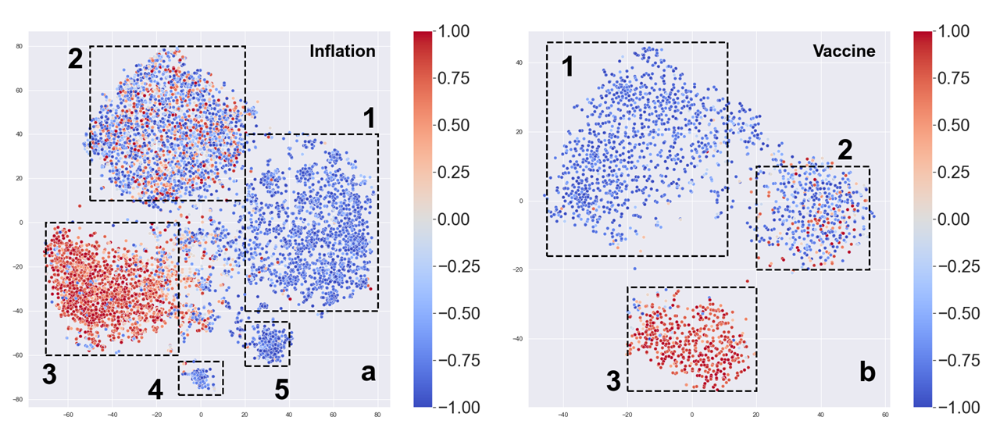
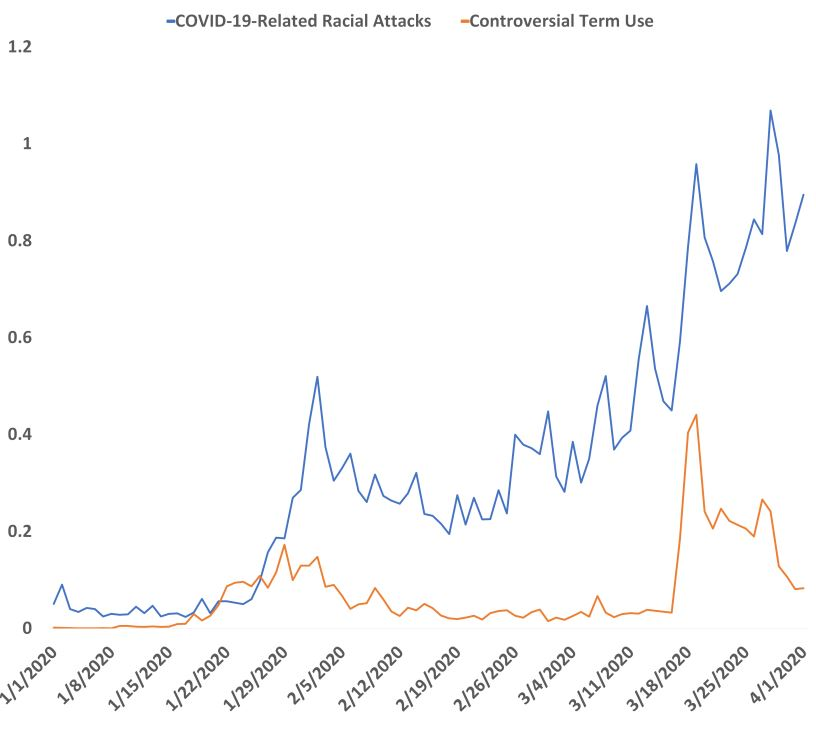

What's New
- [06/15/2024] I will serve as an Area Chair for EMNLP 2024.
- [05/15/2024] Our study on the factors contributing to crowdfunding success has been featured in The Wall Street Journal.
- [11/13/2023] üî• Check out our latest exploration on GPT-4V(ision) for social multimedia analysis tasks including sentiment analysis, hate speech detection, fake news identification, demographic inference, and ideology detection!
- [07/13/2023] In our new studies (ICWSM 2024, ICWSMW 2023), we uncover media bias in 1.8 million headlines across the political spectrum. Our findings suggest that media bias is growing. The work is also covered by StudyFinds, and shared by ScienceBlog, RealClearScience, Nation, Mirage.News, Phys.org, and the American Association for the Advancement of Science (AAAS) via EurekAlert!
- [03/21/2023] Our survey entitled Human Behavior in the Time of COVID-19: Learning from Big Data, is accepted for publication in the Horizons in Big Data 2022 article collection of Frontiers in Big Data.
- [03/09/2023] I was awarded the 2023 Arts, Sciences and Engineering Donald M. and Janet C. Barnard Fellowship. üéâüéâ
- [03/25/2022] Our study on the scale and scope of the influence of misinformation and fact-based news about COVID-19 vaccines on social media platforms on the vaccine uptake is covered by multiple news outlets including Medical Economics, News Medical, News Wise, UK Today News, and Medical Xpress.
- [05/19/2021] In a new study, we dissect the public responses to the #StopAsianHate movement using large scale Twitter data and provide findings that can help design better ways of reducing tension and misunderstandings between ethnic groups. The work is also covered by Rochester Beacon and Futurity.
- [08/12/2020] We won the first place of the University of Rochester Biomedical Data Science Hackathon Summer 2020.
- [07/23/2020] Tech Xplore reports a series of our recent studies that show Twitter mirrors our attitudes and feelings about COVID-19. These findings are shared in a lightning presentation for chairs of computer science PhD-granting departments and heads of major industrial research labs at the Computing Research Association (CRA) Virtual Conference.
- [05/30/2020] Our work on analyzing the use of controversial terms of COVID-19 on Twitter is highlighted by IEEE Spectrum, the flagship magazine and website of the IEEE. Incidentally, this story shares the headlines with the story about the successful launch of the SpaceX Dragon 2 spacecraft. Cool! This work is also covered by Tech Xplore.
- [03/26/2020] Our work on analyzing the performance of the crowdfunding campaigns on GoFundMe over a wide variety of funding categories is covered by The New York Times.
|
Selected Research
* indicates co-first-authorship.
|
 Click for zooming up.
Click for zooming up.
|
Mixture of Weak & Strong Experts on Graphs
Hanqing Zeng*, Hanjia Lyu*, Diyi Hu, Yinglong Xia, Jiebo Luo
ICLR, 2024
[PDF]
[Poster]
[Code]
We propose Mixture of Weak & Strong Experts on graphs, where the weak expert is a light-weight Multi-layer Perceptron (MLP), and the strong expert is an off-the-shelf Graph Neural Network (GNN).
|
 Click for zooming up.
Click for zooming up.
|
LLM-Rec: Personalized Recommendation via Prompting Large Language Models
Hanjia Lyu, Song Jiang, Hanqing Zeng, Yinglong Xia, Qifan Wang, Si Zhang, Ren Chen, Chris Leung, Jiajie Tang, Jiebo Luo
NAACL, 2024
[PDF]
[Poster]
We investigate various prompting strategies for enhancing personalized content recommendation performance with Large Language Models (LLMs) through input augmentation.
|
 Click for zooming up.
Click for zooming up.
|
Human vs. LMMs: Exploring the Discrepancy in Emoji Interpretation and Usage in Digital Communication
Hanjia Lyu*, Weihong Qi*, Zhongyu Wei, Jiebo Luo
ICWSM, 2024
[PDF]
[Poster]
We examine the behavior of GPT-4V in replicating human-like use of emojis.
|
 Click for zooming up.
Click for zooming up.
|
Computational Assessment of Hyperpartisanship in News Titles
Hanjia Lyu*, Jinsheng Pan*, Zichen Wang*, Jiebo Luo
ICWSM, 2024
[PDF]
[Poster]
[Data]
We conduct a computational analysis to quantify the extent and dynamics of partisanship in news titles. While some aspects are as expected, our study reveals new or nuanced differences between the three media groups.
|
 Click for zooming up.
Click for zooming up.
|
GPT-4V(ision) as A Social Media Analysis Engine
Hanjia Lyu*, Jinfa Huang*, Daoan Zhang*, Yongsheng Yu*, Xinyi Mou*, Jinsheng Pan, Zhengyuan Yang, Zhongyu Wei, Jiebo Luo
arXiv, 2023
[PDF]
We explore GPT-4V(ision)'s capabilities for social multimedia analysis including sentiment analysis, hate speech detection, fake news identification, demographic inference, and political ideology detection.
|
 Click for zooming up.
Click for zooming up.
|
Human Behavior in the Time of COVID-19: Learning from Big Data
Hanjia Lyu, Arsal Imtiaz, Yufei Zhao, Jiebo Luo
Frontiers in Big Data, 2023
[PDF]
In this study, we present an overview of the existing studies on using big data techniques to study human behavior in the time of the COVID-19 pandemic.
|

Click for zooming up.
|
Understanding Political Polarization via Jointly Modeling Users, Connections and Multimodal Contents on Heterogeneous Graphs
Hanjia Lyu, Jiebo Luo
ACM MM, 2022
[PDF]
[Video]
[Poster]
We adopt a heterogeneous graph neural network to jointly model user characteristics, multimodal post contents as well as user-item relations in a bipartite graph to learn a comprehensive and effective user embedding without requiring ideology labels.
|
 Click for zooming up.
Click for zooming up.
|
Social Media Study of Public Opinions on Potential COVID-19 Vaccines: Informing Dissent, Disparities, and Dissemination
Hanjia Lyu, Junda Wang, Wei Wu, Viet Duong, Xiyang Zhang, Timothy D. Dye, Jiebo Luo
Intelligent Medicine, 2022
[PDF]
We adopt a human-guided machine learning framework using more than six million tweets from almost two million unique Twitter users to capture public opinions on the vaccines for SARS-CoV-2.
|
 Click for zooming up.
Click for zooming up.
|
Understanding Public Opinion Toward the #StopAsianHate Movement and the Relation With Racially Motivated Hate Crimes in the US
Hanjia Lyu, Yangxin Fan, Ziyu Xiong, Mayya Komisarchik, Jiebo Luo
IEEE TCSS, 2021
[PDF]
We conduct a social media study of public opinion on the #StopAsianHate and #StopAAPIHate movement based on 46,058 Twitter users across 30 states in the United States ranging from March 18 to April 11, 2021.
|

Click for zooming up.
|
Sense and Sensibility: Characterizing Social Media Users Regarding the Use of Controversial Terms for COVID-19
Hanjia Lyu, Long Chen, Yu Wang, Jiebo Luo
IEEE TBD, 2020
[PDF]
We characterize the Twitter users who use controversial terms and those who use non-controversial terms for COVID-19.
|
Teaching
Guest Lecturer
- Fudan University, Nov. 2023
- MI620017 Insurance Study: Generative Artificial Intelligence in Finance and Insurance
- University of Rochester, Sep. 2023
- CSC 440 Data Mining: Towards Data Intelligence: Unveiling Insights through Data Mining
Teaching Assitant
|
Service
Organizing Committee
Area Chair
Program Committee/Reviewer
- AAAI, ACL, ACMMM, ASONAM, BigData, CIKM, EMNLP, ICDM, ICME, ICWSM, KDD, NeurIPS, SDM, WSDM, WWW
- TKDE, TMM
|
|
|
Meta AI, Menlo Park, CA
Research Scientist Intern
June - Oct 2024. Advisors:
Yinglong Xia.
|
|
|
Meta AI, Menlo Park, CA
Research Scientist Intern
May - Aug 2023. Advisors: Hanqing Zeng,
Yinglong Xia.
Projects:
|
|
|
Meta AI, Menlo Park, CA
Research Scientist Intern
May - Sep 2022. Advisors: Fiona Tang,
Ren Chen,
Yinglong Xia.
Project: Recommender systems.
|

|
Wyze Labs, Kirkland, WA
Research Scientist Intern
Jan - May 2022. Advisors: Zhongwei Cheng,
Mohammad Mahdi Kamani,
Lin Chen.
Project: Wyze Rule: Federated Rule Dataset for Rule Recommendation Benchmarking
|
|
Publications
* indicates co-first-authorship.
2024
- Daoan Zhang*, Junming Yang*, Hanjia Lyu*, Zijian Jin, Yuan Yao, Mingkai Chen, and Jiebo Luo, “A Benchmark and Chain-of-Thought Prompting Strategy for Large Multimodal Models with Multiple Image Inputs,” International Conference on Pattern Recognition (ICPR), Kolkata, India, December 2024.
- Weihong Qi, Jinsheng Pan, Hanjia Lyu, and Jiebo Luo, “Excitements and Concerns in the Post-ChatGPT Era: Deciphering Public Perception of AI through Social Media Analysis,” Telematics and Informatics, 2024.
- Junyu Chen, Jie An, Hanjia Lyu, Christopher Kanan, and Jiebo Luo, “Learning to Evaluate the Artness of AI-generated Images,” IEEE Transactions on Multimedia (TMM), 2024.
- Junyu Chen, Jie An, Hanjia Lyu, Christopher Kanan, and Jiebo Luo, “Holistic Visual-Textual Sentiment Analysis with Prior Models,” IEEE International Conference on Multimedia Information Processing and Retrieval (MIPR), San Jose, CA, USA, August 2024.
- Xinnong Zhang*, Haoyu Kuang*, Xinyi Mou, Hanjia Lyu, Kun Wu, Siming Chen, Jiebo Luo, Xuanjing Huang, and Zhongyu Wei, “SoMeLVLM: A Large Vision Language Model for Social Media Processing,” Annual Meeting of the Association for Computational Linguistics (ACL), Bangkok, Thailand, August 2024.
- Hanjia Lyu*, Weihong Qi*, Zhongyu Wei, and Jiebo Luo, “Human vs. LMMs: Exploring the Discrepancy in Emoji Interpretation and Usage in Digital Communication,” AAAI International Conference on Web and Social Media (ICWSM), Buffalo, NY, June 2024.
- Hanjia Lyu, Song Jiang, Hanqing Zeng, Yinglong Xia, Qifan Wang, Si Zhang, Ren Chen, Chris Leung, Jiajie Tang, and Jiebo Luo, “LLM-Rec: Personalized Recommendation via Prompting Large Language Models,” Annual Conference of the North American Chapter of the Association for Computational Linguistics (NAACL), Mexico City, Mexico, USA, June 2024.
- Xiaofei Zhou, Jingwan Tang, Hanjia Lyu, Xinyi Liu, Zhenhao Zhang, Lichen Qin, Fiona Au, Advait Sarkar, and Zhen Bai, “Creating An Authoring Tool for K-12 Teachers to Design ML-supported Scientific Inquiry Learning,” Late Breaking Papers: ACM Conference on Human Factors in Computing Systems (CHI), Honolulu, HI, USA, May 2024.
- Xinyi Mou, Zejun Li, Hanjia Lyu, Jiebo Luo, and Zhongyu Wei, “Unifying Local and Global Knowledge: Empowering Large Language Models as Political Experts with Knowledge Graphs,” The ACM Web Conference (WWW), Singapore, May 2024.
- Hanqing Zeng*, Hanjia Lyu*, Diyi Hu, Yinglong Xia, and Jiebo Luo, “Mixture of Weak & Strong Experts on Graphs,” Twelfth International Conference on Learning Representations (ICLR), Vienna, Austria, May 2024.
- Hanjia Lyu*, Jinsheng Pan*, Zichen Wang*, and Jiebo Luo, “Computational Assessment of Hyperpartisanship in News Titles,” AAAI International Conference on Web and Social Media (ICWSM), Buffalo, NY, June 2024.
2023
- Jinsheng Pan, Zichen Wang, Weihong Qi, Hanjia Lyu, and Jiebo Luo, “Understanding Divergent Framing of the Supreme Court Controversies: Social Media vs. News Outlets,” Special Session on Intelligent Data Mining, IEEE Big Data Conference, Sorrento, Italy, December 2023.
- Enting Zhou*, Yurong Liu*, Hanjia Lyu, and Jiebo Luo, “A Fine-Grained Analysis of Public Opinion toward Chinese Technology Companies on Reddit,” Special Session on Intelligent Data Mining, IEEE Big Data Conference, Sorrento, Italy, December 2023.
- Mohammad Mahdi Kamani, Yuhang Yao, Hanjia Lyu, Zhongwei Cheng, Lin Chen, Liangju Li, Carlee Joe-Wong, and Jiebo Luo, “Wyze Rule: Federated Rule Dataset for Rule Recommendation Benchmarking,” Thirty-seventh Conference on Neural Information Processing Systems (NeurIPS), New Orleans, LA, December 2023.
- Junyu Chen, Jie An, Hanjia Lyu, and Jiebo Luo, “How Art-like are AI-generated Images? An Exploratory Study,” International Workshop on Multimedia Content Generation and Evaluation: New Methods and Practice (McGE), ACM Multimedia Conference (ACM MM), Ottawa, Ontario, Canada, October 2023.
- Edinam Kofi Klutse, Samuel Nuamah-Amoabeng, Hanjia Lyu, and Jiebo Luo, “Dismantling Hate: Understanding Hate Speech Trends Against NBA Athletes,” International Conference on Social Computing, Behavioral-Cultural Modeling & Prediction and Behavior Representation in Modeling and Simulation (SBP-BRiMS), Pittsburgh, PA, September 2023.
- Jingyang Lin, Junyu Chen, Hanjia Lyu, Igor Khodak, Divya Chhabra, Colby L Day Richardson, Irina Prelipcean, Andrew M Dylag, and Jiebo Luo, “Predicting Adverse Neonatal Outcomes for Preterm Neonates with Multi-Task Learning,” IEEE International Conference on Digital Health (ICDH), Chicago, IL, July 2023.
- Hanjia Lyu*, Kevin C. Kapcio*, Kyle C. Purrman, Christian G. Peyre, Carolyn E. Jones, Michal J. Lada, and Jiebo Luo “Applying Machine Learning to Predict Esophageal Cancer Recurrence After Esophagectomy,” IEEE International Conference on Digital Health (ICDH), Chicago, IL, July 2023.
- Jinsheng Pan*, Weihong Qi*, Zichen Wang, Hanjia Lyu, and Jiebo Luo, “Bias or Diversity? Unraveling Fine-Grained Thematic Discrepancy in U.S. News Headlines,” Workshop on News Media and Computational Journalism (MEDIATE), AAAI International Conference on Web and Social Media (ICWSM), Limassol, Cyprus, June 2023.
- Hanjia Lyu, Arsal Imtiaz, Yufei Zhao, and Jiebo Luo, “Human Behavior in the Time of COVID-19: Learning from Big Data,” Frontiers in Big Data, 2023.
- Xiaofei Zhou, Hanjia Lyu, Jiebo Luo, and Zhen Bai, “ML-SD Modeling: How Machine Learning Can Support Scientific Discovery Learning for K-12 STEM Education,” Artificial Intelligence for Education Workshop (AI4Edu), AAAI Conference on Artificial Intelligence (AAAI), Washington DC, February 2023.
2022
- Sajid Hussain Rafi Ahamed, Shahid Shakil, Hanjia Lyu, Xinping Zhang, and Jiebo Luo, “Doctors vs. Nurses: Understanding the Great Divide in Vaccine Hesitancy among Healthcare Workers,” Special Session on Intelligent Data Mining, IEEE Big Data Conference, Osaka, Japan, December 2022.
- Timothy Dye, Lisette Alcántara, Hanjia Lyu, Shazia Siddiqi, Saloni Sharma, Eva Pressman, and Jiebo Luo, “Oppression, COVID Vaccination, and Vaccine Sentiments in a Global Sample,” Annals of Epidemiology (ACE Abstracts), 2022.
- Yangxin Fan, Hanjia Lyu, Jin Xiao, and Jiebo Luo, “American Twitter Users Revealed Social Determinants-related Oral Health Disparities amid the COVID-19 Pandemic,” Quintessence International, 2022.
- Hanjia Lyu, and Jiebo Luo, “Understanding Political Polarization via Jointly Modeling Users, Connections and Multimodal Contents on Heterogeneous Graphs,” ACM Multimedia Conference (ACM MM), Lisboa, Portugal, October 2022.
- Kevin C. Kapcio, Hanjia Lyu, Kyle C. Purrman, Christian G. Peyre, and Jiebo Luo, Carolyn E. Jones, and Michal J. Lada, “Applying Machine Learning to Predict Esophageal Cancer Recurrence After Esophagectomy,” Supplemental Issue of Journal of the American College of Surgeons, ACS Clinical Congress, San Diego, CA, October 2022.
- Arsal Imtiaz, Danish Khan, Hanjia Lyu, and Jiebo Luo, “Taking sides: Public Opinion over the Israel-Palestine Conflict in 2021,” International Workshop on Social Sensing (SocialSens): Special Edition on Belief Dynamics, AAAI International Conference on Web and Social Media (ICWSM), Atlanta, GA and online, June 2022.
- Yichi Qian, Qiyi Shan, Hanjia Lyu, and Jiebo Luo, “Look behind the Censorship: Reposting-User Characterization and Muted-Topic Restoration,” International Workshop on Social Sensing (SocialSens): Special Edition on Belief Dynamics, AAAI International Conference on Web and Social Media (ICWSM), Atlanta, GA and online, June 2022.
- Wei Zhu, Zihe Zheng, Haitian Zheng, Hanjia Lyu, and Jiebo Luo, “Learning to Aggregate and Refine Noisy Labels for Visual Sentiment Analysis,” International Conference on Pattern Recognition (ICPR), Montréal, August 2022.
- Xiaofei Zhou, Jingwan Tang, Beilei Guo, Hanjia Lyu, and Zhen Bai, “Challenges and Design Opportunities in Data Analysis for ML-Empowered Scientific Inquiry – Insights from a Teacher Professional Development Study,” International Conference of the Learning Sciences (ICLS), Virtual, June 2022.
- Hanjia Lyu, Zihe Zheng, and Jiebo Luo, “Misinformation versus Facts: Understanding the Influence of News Regarding COVID-19 Vaccines on Vaccine Uptake,” Health Data Science, 2022.
2021
- Hanjia Lyu, Yangxin Fan, Ziyu Xiong, Mayya Komisarchik, and Jiebo Luo, “Understanding Public Opinion toward the #StopAsianHate Movement and the Relation with Racially Motivated Hate Crimes in the US,” IEEE Transactions on Computational Social Systems (TCSS), 2021.
- Tanqiu Jiang, Sidhant Bendre, Hanjia Lyu, and Jiebo Luo, “From Static to Dynamic Prediction: Wildfire Risk Assessment Based on Multiple Environmental Factors,” Special Session on Intelligent Data Mining, IEEE Big Data Conference, Virtual, December 2021.
- Xupin Zhang, Hanjia Lyu, and Jiebo Luo, “Understanding the Hoarding Behaviors during the COVID-19 Pandemic using Large Scale Social Media Data,” Special Session on Intelligent Data Mining, IEEE Big Data Conference, Virtual, December 2021.
- Hanjia Lyu, Junda Wang, Wei Wu, Viet Duong, Xiyang Zhang, Timothy D. Dye, and Jiebo Luo, “Social Media Study of Public Opinions on Potential COVID-19 Vaccines: Informing Dissent, Disparities, and Dissemination,” Intelligent Medicine, 2021.
- Ziyu Xiong, Pin Li, Hanjia Lyu, and Jiebo Luo, “Social Media Opinions on Working From Home in the United States During the COVID-19 Pandemic: Observational Study,” Journal of Medical Internet Research: Medical Informatics, 2021.
- Wei Wu, Hanjia Lyu, and Jiebo Luo, “Characterizing Discourse about COVID-19 Vaccines: A Reddit Version of the Pandemic Story,” Health Data Science, 2021.
- Xupin Zhang, Hanjia Lyu, and Jiebo Luo, “What Contributes to a Crowdfunding Campaign’s Success? Evidence and Analyses from GoFundMe Data,” IEEE Journal of Social Computing, 2021.
- Xiyang Zhang, Yu Wang, Hanjia Lyu, Yipeng Zhang, Yubao Liu, and Jiebo Luo, “The Influence of COVID-19 on people’s Well-Being: Big Data Methods for Capturing Working Adults’ Well-being and Protective Factors Nationwide,” Frontiers in Psychology, 2021.
- Long Chen, Hanjia Lyu, Tongyu Yang, Yu Wang, and Jiebo Luo, “Fine-Grained Analysis of the Use of Neutral and Controversial Terms for COVID-19 on Social Media,” International Conference on Social Computing, Behavioral-Cultural Modeling & Prediction and Behavior Representation in Modeling and Simulation (SBP-BRiMS), Virtual, July 2021.
- Karan Vombatkere, Hanjia Lyu, and Jiebo Luo, “How Political is the Spread of COVID-19 in the United States? An Analysis using Transportation and Weather Data,” International Conference on Social Computing, Behavioral-Cultural Modeling & Prediction and Behavior Representation in Modeling and Simulation (SBP-BRiMS), Virtual, July 2021.
- Yipeng Zhang, Hanjia Lyu, Yubao Liu, Xiyang Zhang, Yu Wang, and Jiebo Luo, “Monitoring Depression Trends on Twitter During the COVID-19 Pandemic: Observational Study,” Journal of Medical Internet Research: Infodemiology, 2021.
2020
- Siqing Cao, Hanjia Lyu, and Xian Xu, “InsurTech development: Evidence from Chinese media reports,” Technological Forecasting and Social Change, 2020.
- Hanjia Lyu, Long Chen, Yu Wang, and Jiebo Luo, “Sense and Sensibility: Characterizing social media users regarding the use of controversial terms for COVID-19,” IEEE Transactions on Big Data (TBD), 2020.
|
|

{kind=link}
{kind=link}